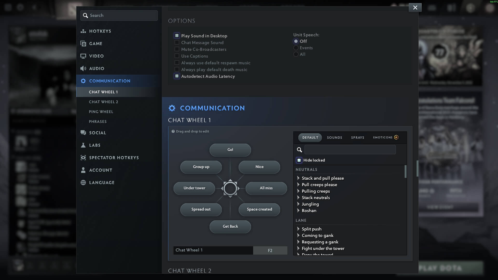
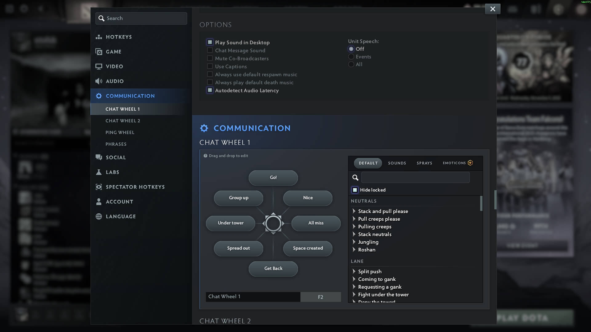

A layout should make sense — visually and mechanically.
The more intuitive it is, the easier it is to use, the fewer mistakes you’ll make, and the faster you’ll be able to execute your decisions.
Even if your decisions aren’t great, at least your execution won’t be the limiting factor.
Think about it: the layout is the only way to interact with the game. That's why it's extremely important to have a great one. It has to feel like an extension of your mind.
On this page, you’ll find a detailed explanation of the etofok layout for Dota 2. I don't have a fancy name for it, but in my opinion this is the best Dota 2 hotkey layout and settings possible. In my opinion. It’s what I personally use, though you don’t have to.
I’ll present the hotkeys first, and then explain the reasoning behind each decision for every hotkey and every in-game setting. I promise this isn’t your typical guide.
Expected Read Time — 2 hours.
This is what advanced looks like.
Alt is our
Think of Alt as "to me".
Hold down Alt and everything targetable will target your own hero i.e.

This is an extremely important feature.
We're going to build our layout around it.
No change to control groups.
Do not be intimidated by control groups.
Just bind these for now.
97% of the hero pool will do perfectly fine with just 2-3 groups.
In fact, in Dota 2 we can get away with exactly 0 control groups.
More on that later.
It's not going to hurt to have specific binds for...

 ,
,

Important items like  and
and  .
.
Neutral creeps like  ,
,  to play
to play  ,
,  .
.
We can scout and bait with individual  illusions, and even
illusions, and even
Control groups are your friend.
No change, abilities use the intuitive QWER layout:
Just in case you didn't know:
It's a great feature, I recommend getting used to it.
Quick Casts allow us to cast instantly with a key press, eliminating the need for a mouse click.
Put everything on Quick Casts, with one exception —
Notable examples:  ,
,  ,
,
Because we need to aim these very carefully — it's better to keep them on Normal Cast.

Don't forget to rebind abilities onto Quick Casts for Neutrals.
Most neutrals have an ability to cast.
This is also useful for
Go to
They sometimes get in the way.

Then, switch to


Extending our 'Ability row' to the right is not ideal.
While T is somewhat ok — Y is just terrible.
Also we want to keep in mind that not every hero even has
And when they do, sometimes they are important and something not at all.
And sometimes one of the 'Core 4' abilities is a passive.
I'm going to start with a simple example:
Considering the fact that , AND unlikely to choose — she's probably the simplest hero in the game in terms of unit control.
Another example is
6 Abilities, but  is a passive.
is a passive.
It can't be activated.
So, let's use R for one of the other abilities:
Leave  on E and move
on E and move
This is reasonable, because both of our 'buff abilities' are next to each other and use great keys.
But this is not ideal, because...
Important!
You still want a hotkey for your passive abilities:
If you don't have a hotkey, you can't use CTRL + Ability Key to learn the ability.
You don't need a great key, but you do need a key.
Let's try something with 6 active buttons:
This is really clunky and looks awful.
But I want to highlight something — it is possible to bind abilities to control group keys.
Important: despite the fact that we have
That's great news, because
Realistically, the only other units you might have when playing , for which you don't even need a dedicated control group because you can just use
This means,
We can easily have a set up like this:
or even like this:
That's pretty comfortable for a hero with 6 active buttons, don't you think?
Here's  , and he's no more difficult:
, and he's no more difficult:

Alternatively, if you don't care about control groups — just bind them.
Leave 2 for
Ideally, to next-level your you'd want to cast  with your thumb — so that you use all the fingers. It's more efficient this way, and faster.
with your thumb — so that you use all the fingers. It's more efficient this way, and faster.
But that's a story for another day.
Now let me show you something interesting.
One last tip on how to bind
 ,
,

or
 ,
,
 ,
,
You want to bind these abilities to
 (please be careful, because Ensnare is a targerable ability)
(please be careful, because Ensnare is a targerable ability)
The reason is because we're going to use Alt a lot.
And if a
You have to release Alt to cast.
Spend a few minutes and bind both — you don't have a heropool of 100.
It might come into play in a hectic fight.
The HUD shows
Arguably, instant access to items is even more important than instant access to abilities.
That's why we bind items to Quick Cast.
And just like with abilities — we must have instant access to self-cast.
That's why we don't bind items to Alt a.k.a. the HoN item binds.
We also want it to be intuitive and easily accessible.
That's why we bind items right below the ability row.
This way all the 6 items are easily accessible, self-cast is easily accessible and the layout is visually coherent with the in-game interface.

You will never misclick, forget about or misuse anything this way.
This option used to be much more obscure — Valve made it more visible in the 7.39 patch.
(May 23rd, 2025)
Very few people even aware of this option, but it's the best.
This menu allows us to set Normal Cast per item, overriding Quick Cast slot binds.

Uncheck the following:


Regardless of the inventory slot, these items will use Normal Cast.
This is critical because we need to see the Area Of Effect visual indicator in order to use these items to their potential.
Holding down ALT blocks user input for
This is because you can't "target" a
Here's an example.
Let's say, we have  and
and 
This is not uncommon.
To use these items on ourselves we have to juggle the ALT key.
Here's what I'm talking about:
1. I press ALT to
2. I release ALT to apply
3. I have to press ALT again to myself, and then
4. I have to release ALT to use (it can't be targeted)
Hopefully it'll get changed.
Here's a post on Reddit.
Here's a suggestion on github, which you can bump.

 is the 7th item, so it follows the C to the right.
is the 7th item, so it follows the C to the right.

Easily accessible and almost visually coherent.
Think of G as "Go Ground".

Use
G
I've been using Spacebar for
The thumb is often a very underused finger — it's ideal for
And I promise, it's much easier (and faster) to cycle through...
1Spacebar2Spacebar3Spacebar than 1A2A3A
If S is for Stop — then F is for Freeze, Forfeit or F*ck it.
F is in the very middle of everything: below abilities, to the right of items, to the left of teleport scroll and above the neutral item slot.
Now our left hand rests on this block of keys with instant reach to everything.
It is extremely comfortable.
 .
.
Most people don't bother with it.
CapsLock is a great key for
This hotkey is not something that you use very often.
Literally up to 8 times in a very long game.
But there was a period of my life when I was a Turbo enjoyer, where it's not rare to get a big level up in the middle of a fight.
That's how I found out that having a hotkey for

Oversight?
Alt + 1 and Alt + 2 can't be used for talent upgrades.
When you try to use Alt for

You may also want to unbind
Here's another way to select and control units in Dota 2.
Dota 2 has these fantastic features:
1.
2.

3.
In other words,
4.
These should supplement your control groups — not replace them completely.
This is very intuitive.
This is also very intuitive.
Ctrl allows us to command all units without selecting them, and when we want to select them —WheelDown +
Even when holding down Ctrl.
Do not bind WheelUp +
because you want to be able to
These binds works together in a way I can't really explain — you have to experience it.
WheelUp and WheelDown are faster than double-tapping, and don't break your hand position at all. Effortless to "click".
I encourage you — the reader — to go into a Demo and play around with  or
or  . You won't be able to go back.
. You won't be able to go back.
Inconsistent behavior (bug?):
Shift +
Shift +
Here's a ticket on github.

Now, there are many different configurations for all-things-shop.
This is what I'm currently using.
In any case, you want the following pattern to be easy:
F1
In reality, it's pretty rare we need to control the courier.
Y
It used to be much more useful when we weren't getting free

I bind  to R as courier's "Ultimate" ability.
to R as courier's "Ultimate" ability.
It's easier to reach.
Chances are, when you want to use it you'll be manually controlling your courier anyway. So I don't think a global bind is needed.
Interesting finds and limitations:
A lot of keys don't work for
However, there is no reason for keys like F1F2F3 or their Alt counterparts to behave this way. But they do.
This matters because we have to close the shop window before we can use these hotkeys.
Alternatively, we can disable
I personally did the latter:
This is not for flavor — this is a mandatory bind. It has to be easily accessible.
Emotional Damage is a real thing, as is Emotional Support.
The
After trying out 10+ different variations — I decided F2 is the best.
Over a decade I figured this is the required setup to play.
I really want these call-outs on hand.
Towards the top I have progressively "aggressive" call-outs.
Towards the bottom I have progressively "defensive" call-outs.
On the left I have "suggestions what to do".
On the right I have "be aware of my perspective".
It's actually crazy how much it makes sense.
Synergizes perfectly well with every other call-out.
Prepares the team for action.
Reminds them not to dive.
Reminds them not to chase off your own high-ground.
It's the best.
Treat everyone like they have a 3 second memory.
,  ,
,
Generally useful around objectives, especially high-ground.
When used with
It's also useful when you actually want to group up, i.e. for  or
or 
It serves as "Wait for me" and "I'm not there yet" at the same time.
These are great call-outs, because they lower the chance of our team overextending.
The team needs to know whether they can rely on us to make better decisions.
", "They are ganking", "Watch the minimap" and "Careful."
Use with
Exclusively flavor and emotions sink.
Use whatever you like.

Camera Grip is generally much better.
Especially so, if your mouse sensitivity is low (<1000).
I personally have

Now, I'm not against
I just don't use it.
The main reason to keep
Here's something very interesting.
You can use spells and items on allies via portrait clicks.
You can't use spells or items on enemies. That would be ridiculous.
What you can also do — is issue
Oversight?
Not sure if intended: you can
This is relevant, because attacking an enemy hero draws creep aggro.
And you can draw creep aggro by using
This is extremely useful on heroes that benefit from creeps attacking them:
 because of
because of
 because of
because of
But even outside of these 3, aggro manipulation is a very important mechanic in this game.
Use
Use

You definitely want to have and .
This works:
Another option is to use

This allow you to use
However, I personally don't like
I use
Experiment with it.
And don't forget to enable
Step 1a. Enable
Step 1b. Enable
Step 1c. Check
Step 2. Press and hold your
Step 3. Spam your
This way you can reliably last-hit most creeps.
The reason to choose
If you choose
If you choose
So this is a better option.
Generally, you want this Enabled to prevent wasting your channeled spells such as ,  or
or
However, you really want this Disabled on 
If you have
In my opinion this is unreasonably clunky and you will die a lot because of it.
Alt should not affect it.
I use
If I could I'd use an even bigger minimap.
Hero icons stand out more, especially the allies, because the direction-arrow is green.
I find it distracting, so I don't use it.
This one is interesting, because it depends on your skill level.

Newbie players often misclick on the minimap in panic.
This notably happens to Radiant players intending to walk back to base, but they overshoot the mouse movement and accidentally click on the minimap.
This often makes them walk in whatever direction and feed.
That's exactly what this option is for:
it ignores all minimap input for a split second to stop this from happening.
Unfortunately, for slightly more experienced players this setting makes it worse, because the game literally doesn't register our clicks.
That's bad.
Set it to 0.
I see no reason to use anything else but this.

Why would I need everyone's nicknames cluttering my screen?
Especially considering the kind of nicknames Dota 2 players have.
Dota 2 nicknames is an art form, but I will appreciate it in a lobby.
A couple of years ago I disabled
It's a peaceful life.

I disable
I used
I like this option a lot, but it's a bit distracting and I no longer need it.

These are some next-level gameplay options.
 .
.
Another thing you might snatch is the
Another great use for
You might accidentally attack their hero model instead, missing the last hit.
This is noticable against bulky heroes like
The problem is finding dedicated buttons for all these modifiers.
I feel like you need actual extra keys on your keyboard to use these, for example the macro keys on Razer Blackwidow or Logitech G915 (this is not an advertisement, just an example).
p.s. in fact, I have used the Blackwidow (two actually) for like 7 years, but as for today it's no longer my choice.
I highly recommend NOT binding any actions to mouse side buttons.
Use the mouse for aiming.
3 reasons NOT to bind any actions to mouse:
1. Your grip is worse, because you have to account for the buttons in your grip.
2. Your aim is worse, because your grip is worse.
3. Your hand is more strained, because of the bad grip.
Honestly, it's very hard to explain the true effect, and I encourage you to experiment. Listen to your body.
I've used Mouse side button 1 for my  for about 15 years (!).
for about 15 years (!).
I felt like I needed that extra button — but I just had a bad keyboard layout, so I had to compensate with putting buttons on the mouse.
So one day (after playing years of Starcraft 2), I decided to fix my hotkeys.
And everything started to feel lighter. Quicker.
Every part of your gameplay will benefit from having a better interface between your brain and your fingers.
I highly recommend against binding actions to mouse side buttons whenever possible.
p.s. As a side note, I found Enter & Backspace truly the BEST buttons as mouse side buttons in general.
To limit myself from talking in-game I use a bad hotkey:
CapsLock+Alt, but again — I don't use it much.
If you want a bind for the microphone — just have one on the mouse.
And no, it's not in opposition to what I've said in the previous section.
If you want a keyboard bind for the microphone let's take a look what keys are still unused.
We've almost exhausted our left hand side of the keyboard — and that is good.
Here's what's left unused so far.
Win
BN
HJ
TY
56
F3F4 and beyond to the right.
If you don't use
Alt + Capslock
Alt + F — dangerously close to G
Alt + Space — weird, but vacant.
Alt + F1
Alt + F3
Alt + F4
Bug?
` completely ignores Alt and Ctrl.
In the settings it's possible to bind Alt+`, but the game does not react to it.
If you have a mouse with 2 side buttons you have some extra buttons to consider:
Mouse 4 — Mouse Side Button 1
Mouse 5 — Mouse Side Button 2
Alt + Mouse 4
Alt + Mouse 5
So there's still a plenty to go around!


 
